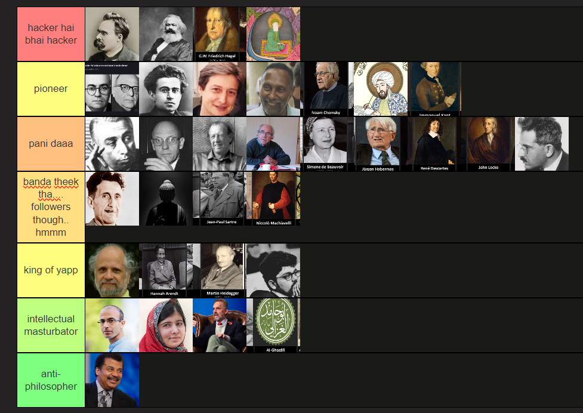

Welcome to Talk Trois
Hello and welcome to the Talk Trois log! This space serves as a record of our discussions, which take place roughly every ten days among Abu, Saahil, and Harsh. However, we warmly invite anyone interested to join us.
Initially, during our vacation, we started our conversations focused on books, but our topics have since expanded to include short stories and essays. Much of our time together is spent reconnecting and enjoying casual banter—so don’t feel intimidated! In fact, Saahil often shows up without having read anything, and that’s perfectly fine!
Our aim is to explore literature without the heavy constraints often imposed by conventional standards and rather do it naturally through recommendations. We try approach it as a journey of discovery, unearthing hidden gems from various cultures—be it stories in our native languages or science fiction from Southeast Asia. Honestly, even we aren’t quite sure where this exploration will lead us, but we encourage you to both observe and participate.
Below, you’ll find sections detailing the topics we’ve covered so far.
P.S. Talk Trois (pronounced “twah”) is a playful nod to the well-known podcast Talk Tuah, where “trois” means “through” in French. Yes, we really do talk through!
#6: Upcoming Topic: Contemporary/Folk Tales
In our next discussions, we’ll delve into stories from our cities. This could include local folklore unique to your birthplace, contemporary narratives centered around the independence of India, or even fictional tales that highlight the culture of your city. The key takeaway is that it should resonate with the essence of your city.
#5: Science Fiction Short Stories
In this session, we ventured into the captivating realm of science fiction, exploring stories that probe profound questions about existence and technology. Each tale brought forth intriguing concepts prompting lively discussions. The stories we covered included:
* “The Nine Billion Names of God” by Arthur C. Clarke* “The Last Question” by Isaac Asimov
* “Reunion” by Vandana Singh
#4: Stories by Premchand
In our discussion on Premchand’s stories, we unraveled the intricacies of his narratives that capture the essence of Indian life and culture. His storytelling resonates with timeless themes of social justice and human struggle especially with respect to India. The stories we covered included:
* Bade Bhai Sahab* Kafan
#3: All Tomorrows by CM Kosemen
This session was a fascinating dive into Kosemen’s imaginative vision of the future of humanity and evolution. We had a great time exploring various “what if” scenarios, which added an extra layer to our conversation. Notably, Abu Shahid was particularly enthusiastic about this book! The book can be accessed here.
#2: Thinkers Tier Rating
In this unique session, we rated various thinkers from history, examining their contributions and relevance in today’s world. Our discussions spanned a wide array of influential figures, from Nietzsche to Neil deGrasse Tyson, Malala Yousafzai to Marx, Yuval Noah Harari to Orwell, and Homi Bhabha to Simone de Beauvoir, among many others. This eclectic mix led to vibrant debates and fresh insights into the impact of their ideas on contemporary thought..
#1: Birth of Tragedy by Nietzsche
We kicked off our journey with Nietzsche’s seminal work, delving into his insights on art, culture, and the human experience. This exploration of tragedy laid the groundwork for our future discussions. While we appreciated the first third of the book, the second third was met with some resistance, and the final third managed to provide a satisfactory conclusion. Interestingly, Nietzsche’s own critiques of his work were particularly effective in conveying his ideas. Book with annotations can be found here.